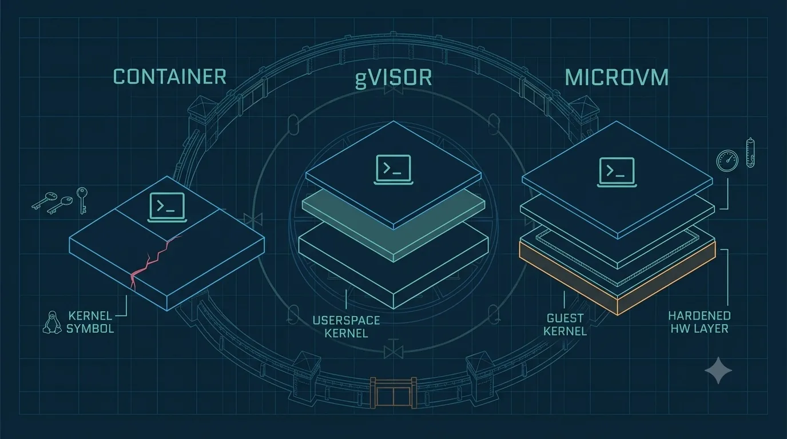

MicroVMs: Stronger Cells (gVisor & Firecracker)
The escape files taught us the hard truth: containers share one floor — the host kernel — and a crack in that floor is an escape no wall can stop. So for the inmates we trust least, we build a fundamentally stronger cell: one with its own floor. Instead of the inmate's syscalls hitting the host kernel directly, we interpose a whole separate kernel, and often a hardware virtualization boundary underneath it. Two designs dominate, and they make different trades: Firecracker and gVisor.
Firecracker: a tiny, hardened VM
Firecracker (AWS) is a VMM — a virtual machine monitor — built on Linux KVM. Its whole philosophy is minimalism as security: where a general-purpose hypervisor like QEMU emulates hundreds of devices, Firecracker emulates only about six (virtio-net, virtio-block, virtio-vsock, virtio-balloon, a serial console, and a minimal keyboard controller). Less emulated hardware means a far smaller host-facing attack surface. It's written in Rust, and it's fast enough to be practical: AWS's own numbers are under 125 ms to boot to application code and under 5 MiB of memory overhead per microVM. It's the engine under AWS Lambda and Fargate — millions of untrusted functions, each in its own tiny VM.
gVisor: a kernel that isn't the kernel
gVisor (Google) takes a different route. Instead of a hardware VM, it runs a userspace application kernel called the Sentry. The Sentry intercepts the guest's syscalls and re-implements the Linux system API itself, in userspace — so the inmate's syscalls hit the Sentry, not the host kernel directly. It catches those syscalls using a platform: ptrace, KVM, or systrap. A separate Gofer process brokers filesystem access, and the Sentry itself runs boxed in with a tightly restricted set of host syscalls. The host kernel's huge syscall surface — the Dirty COW surface — is no longer directly reachable by the inmate.

A technical blueprint-style comparison diagram on a deep navy ground with a faint cyan grid, showing three side-by-side vertical stacks that compare isolation boundaries. Stack 1 "container": a small terminal glyph (>_) sitting directly on one thick shared floor labeled with a kernel symbol, a red hairline crack in that floor. Stack 2 "gVisor": the glyph sits on a thin intermediate slab (a userspace kernel) that rests on the shared floor. Stack 3 "microVM": the glyph sits on its own separate floor slab, with a distinct hardened hardware boundary layer beneath it, clearly separated from the host floor. Clean vector line-art, engineering-schematic aesthetic, cyan (#46b1e0) and soft teal (#7fd1c8) linework on navy (#0c2233), one amber (#f0a15a) accent and one red (#e0708a) crack, generous whitespace, no readable body text baked in. Target size ~1280x720px, 16:9 landscape; compose for an on-page figure with the subject centered and safe margins — it is letterboxed into a 16:9 box, so keep nothing important near the edges.
Generate this with your image agent, then drop the file here.
Where the boundary actually is
| Model | What the inmate must defeat to escape |
|---|---|
| Plain container | The shared host kernel — one kernel LPE is enough shared floor |
| gVisor | The Sentry (userspace kernel), then its restricted host-syscall box middle ground |
| Firecracker microVM | The guest kernel and the VMM and the hardware virtualization boundary separate floor |
Sources: Firecracker FAQ; Firecracker (NSDI '20); gVisor Security Model.